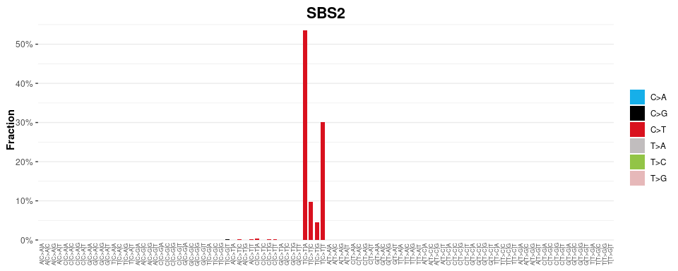
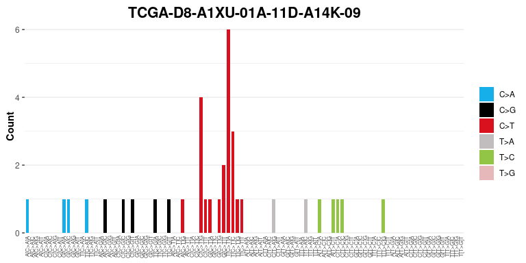
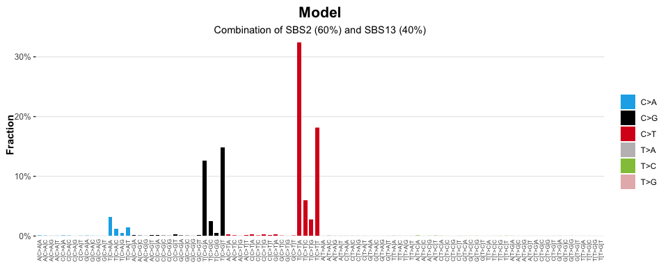
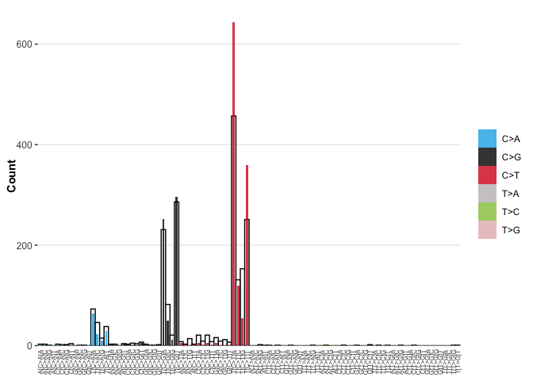

Create interactive visualisations that summarise mutational signature analyses
Installation
You can install the development version of sigvis like so:
if (!require("pak", quietly = TRUE))
install.packages("pak")
pak::pak("selkamand/sigverse")Usage
Visualise Signatures
library(sigvis)
library(sigstash)
# Load Signature
signatures <- sig_load("COSMIC_v3.3.1_SBS_GRCh38")
# Select just SBS2
SBS2 <- signatures[["SBS2"]]
# Plot
sig_visualise(signature = SBS2, title = "SBS2")
#> ✔ All channels matched perfectly to set [sbs_96]. Using this set for sort order
#> ✔ All types matched perfectly to set [sbs_type]. Using this set for sort order
#> ✔ Types matched perfectly to palette [snv_type]
Visualise catalogues
# Load library containing results of TCGA mutational signature analysis
library(TCGAcatalogues)
# Load a catalogue
tally <- catalogues_load("BRCA", type = "SBS_96")
# Select a single sample of interest
sample = "TCGA-5L-AAT1-01A-12D-A41F-09"
tally_single_sample <- tally[[sample]]
tally_single_sample
#> # A tibble: 96 × 4
#> channel type fraction count
#> <chr> <chr> <dbl> <int>
#> 1 A[C>A]A C>A 0.00151 3
#> 2 A[C>A]C C>A 0.00151 3
#> 3 A[C>A]G C>A 0.000503 1
#> 4 A[C>A]T C>A 0 0
#> 5 A[C>G]A C>G 0.00151 3
#> 6 A[C>G]C C>G 0.00151 3
#> 7 A[C>G]G C>G 0 0
#> 8 A[C>G]T C>G 0.00201 4
#> 9 A[C>T]A C>T 0.00402 8
#> 10 A[C>T]C C>T 0.00151 3
#> # ℹ 86 more rows
# Visualise Observed Mutational Profile
sig_visualise(tally_single_sample, class = "catalogue", title = sample)
#> ✔ All channels matched perfectly to set [sbs_96]. Using this set for sort order
#> ✔ All types matched perfectly to set [sbs_type]. Using this set for sort order
#> ✔ Types matched perfectly to palette [snv_type]
Visualise a Signature Model
Visualise the catalogue expected from a signature model, where signature ‘SBS2’ explains 60% of the mutations in a sample, and ‘SBS13’ explains the remaining 40%
# Load sigstats library for combining signature models
library(sigstats)
# Visualise a model (combination of signatures)
model = sig_combine(signatures, model = c('SBS2' = 0.6, 'SBS13' = 0.4), format = "combined")
sig_visualise(model, class = 'model', title = "Model", subtitle = "Combination of SBS2 (60%) and SBS13 (40%)")
#> ✔ All channels matched perfectly to set [sbs_96]. Using this set for sort order
#> ✔ All types matched perfectly to set [sbs_type]. Using this set for sort order
#> ✔ Types matched perfectly to palette [snv_type]
Visualise a Signature Model Against the Observed Mutation Catalogue
Visualise the catalogue expected from a signature model, where signature ‘SBS2’ explains 60% of the mutations in a sample, and ‘SBS13’ explains the remaining 40%, but overlay on top of the observed mutational process
library(sigstats) # For combining signature models
library(sigstash) # For pulling signatures
library(TCGAcatalogues) # For pulling example TCGA catalogue data
# Load Signature
signatures <- sig_load("COSMIC_v3.3.1_SBS_GRCh38")
# Create a model (combination of signatures)
model <- sig_combine(signatures, model = c('SBS2' = 0.6, 'SBS13' = 0.4), format = "signature")
# Load a catalogue (Tally of variant types)
tally <- catalogues_load("BRCA", type = "SBS_96")
# Get tally of a single sample
sample = "TCGA-5L-AAT1-01A-12D-A41F-09"
tally_single_sample <- tally[[sample]]
# Visualise the overlay
sig_visualise_compare_reconstructed_to_observed(
catalogue = tally_single_sample,
signature = model
)
#> ✔ All channels matched perfectly to set [sbs_96]. Using this set for sort order
#> ✔ All types matched perfectly to set [sbs_type]. Using this set for sort order
#> ✔ Types matched perfectly to palette [snv_type]